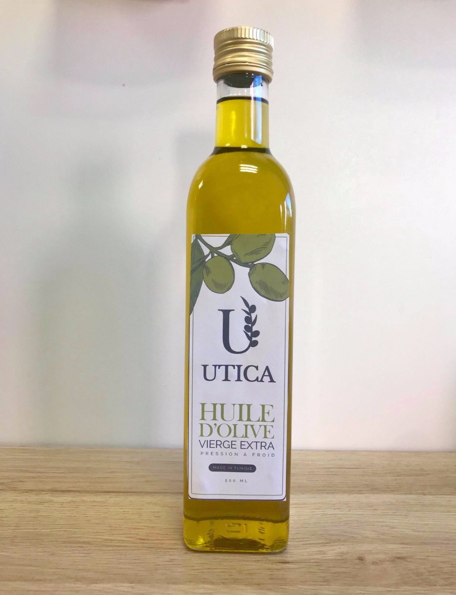

Notre histoire

Il était une fois Utica
Notre marque Utica est un hommage à la ville d’Utique, au nord de la Tunisie. Elle a été un croisement pour toutes les civilisations méditerranéennes pendant plus d’un millénaire. Phéniciens, Romains, Carthaginois et Arabes se sont succédés pour la faire rayonner dans tout le bassin méditerranéen pendant plusieurs siècles. La culture des oliviers, initiée par les Phéniciens en -1100 av JC, et la production d’huile d’olive ont fait la renommée d’Utique. L’huile d’olive Utica, c’est la promesse d’un voyage dans le temps et la garantie d’un produit d’exception, fidèle à ce que la Méditerranée a de meilleur
Le domaine familial
L’huile d’olive, c’est une histoire de famille. Et on ne badine pas avec les histoires de famille. Alors quand son grand-père lui a transmis une vingtaine d’hectares d’oliviers, près d’Utique, Myriam s’est sentie investie d’une mission : perpétuer une tradition où le respect est essentiel. Respect des olives qui sont cueillies à la main pour ne pas abîmer des arbres parfois centenaires, mais aussi respect du consommateur, avec une huile pressée mécaniquement à froid, sans ajout, pour préserver l’intensité de ses arômes.
